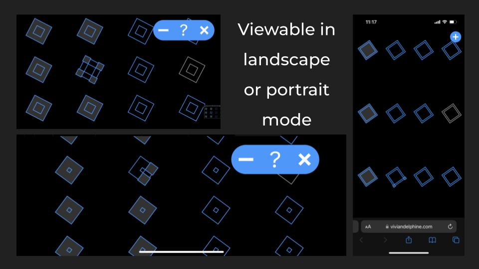
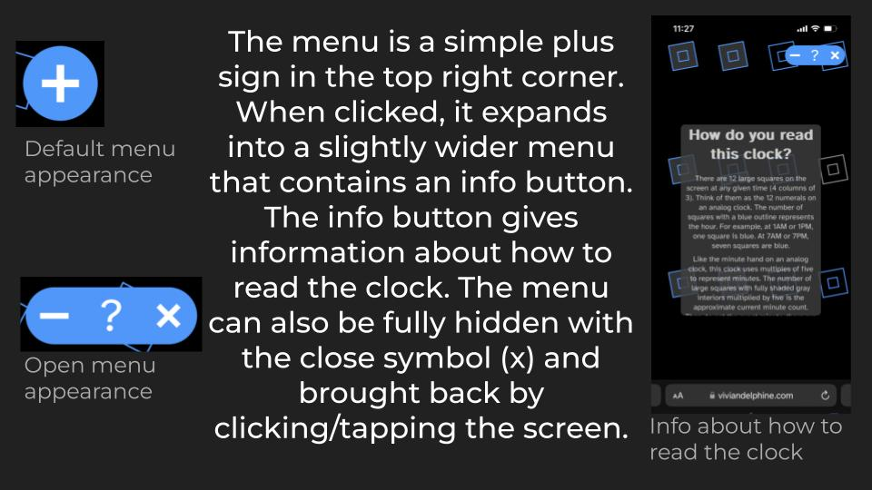

I came up with this concept as part of a class (CS 73: Code, Data, and Art), where the assignment was to create an abstract clock. I wanted to represent time passing with obects that move through the screen in a way that would result in visually satisfying transitions. However, we were not allowed to use numbers (countable objects were fair game, however). Therefore, I decided to translate the language of the analog clock into a clock with twelve countable objects.
I wrote the code in p5.js, a JavaScript library specialized for digital generative and interactive art projects. I started with the visual concept of falling blocks that bounce back and forth across the screen. I used a parabolic motion to mimic how objects move in the real world when pulled by Earth's gravity.
I then decided to use twelve blocks in a grid to represent time similarly to an analog clock. I decided that outlines would represent hours and shading would represent minutes, since those were the clearest two features I could edit on the block. I could also add up to four smaller blocks on one of the larger blocks to represent individual minutes (while the larger blocks represented multiples of five). Since the blocks were square, adding up to four smaller blocks could be done at each of the square's four corners. Lastly, seconds could be represented with an animation where each large square is "filled up" by a smaller square every minute.
Once I had implemented those features and added a few additional features to make the transitions smoother, the clock was complete. I then added a simple, non-intrusive menu with information about how to read the clock.
The most challenging part of this project was making each transition smooth. I wanted this to be visually pleasing and easy to use, so at the end of each minute, there had to be extra code so that one minute smoothly transitioned into the next, and I had to tweak the movement function to make the falling blocks fall at a comfortable rate. Additionally, the menu had to be easy to use, open and close. The basic functionality was not too complex, but the extra pieces of code that made the functionality smoother took most of the time.
There are 12 large squares on the screen at any given time (4 columns of 3). Think of them as the 12 numerals on an analog clock. The number of squares with a blue outline represents the hour. For example, at 1AM or 1PM, one square is blue. At 7AM or 7PM, seven squares are blue.
Like the minute hand on an analog clock, this clock uses multiples of five to represent minutes. The number of large squares with fully shaded gray interiors multiplied by five is the approximate current minute count. Then, to get the exact minute, there are smaller gray squares, each representing one additional minute. For example, at 12:23, there are 4 large gray-shaded squares (4 * 5 = 20 minutes) and 3 small gray-shaded squares. Therefore, we have 20 minutes from large squares and 3 minutes from small squares, for a total of 23 minutes past the hour.
© 2024 Nadine Jackson